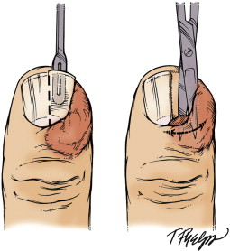
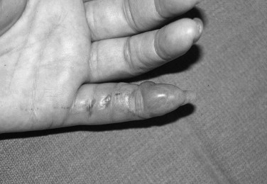
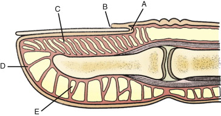
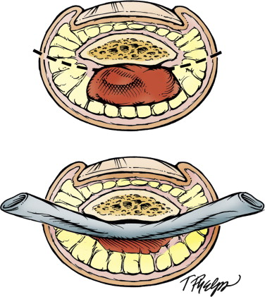
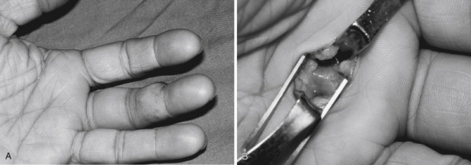
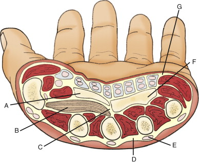
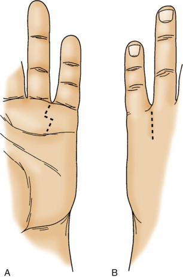
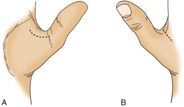
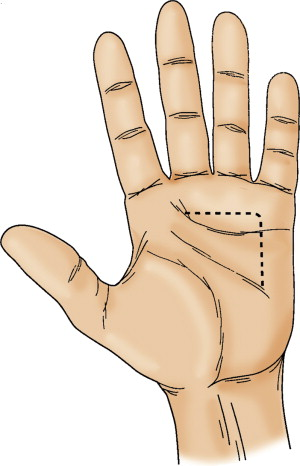

Hand infections
What is cellulitis of
the hand
Usually
a diffuse
infection caused by group A Beta haemolytic strep
As
a rule, surgery
is contraindicated in the presence of a spreading streptococcal
infection.
However,
for
localized infections, other than cellulitis or lymphangitis of
streptococcal
origin, incision and drainage is carried out.
Most
infections
arising on the volar surface of the hand produce maximal
swelling on the dorsum;
however, dorsal drainage is used only when suppuration presents
on the dorsum.
What
is Paronychia
Infection of paronychium. Acute infection is
caused by S.
Areus. A chronic fungal infection by C.
Albicans may
develop in dishwashers
Acute
unilateral
paronychia requires elevation of the cuticle from the nail at
the site of
infection
If
the infection
is advanced or with subungual abscess, removal of the proximal
portion of the
nail is preferred
If
necessary to
ensure adequate drainage, an incision may be made in the skin
below the corner
of the nail, placed laterally to avoid damage to the nail bed

What
is Eponychia
Infection of the eponychium.
What
is a Felon
Infection of the pulp of the finger tip. At
each skin crease, the skin
is bound to the flexor sheath so that the pulp of each phalanx
is in a separate
compartment. The branches of the digital artery that supply the
epiphysis of
the distal phalanx tranverse the pulp space. Infection of the
pulp space may
occlude these vessels and cause necrosis.
Immediate
drainage
is imperative to relieve the increased tension
Superficial
infections
may be drained through incisions directly overlying the site of
infection.
For
a deeply
situated abscess, the incision should be made to one side of the
fingernail,
across under the free edge of the nail, and extended well down
into the pulp of
the finger anterior to the terminal phalanx until all
compartments have been
opened and the abscess cavity has been completely drained


What
are tendon sheath
infections
• Infections in the synovial flexor sheaths
• Those associated with trauma – the most
common organisms are staph and
strep. Lacerations and bites are associated with polymicrobial
infection
including gram negative organisms
• Common antibiotic regimen include
Vancomycin and ciprofloxacin
•
Associated with dog/cat
bites: should
include prophylactic oral
augmentin. For active infection IV ceftriaxone plus
metronidazole or IV
Tazocin.
•
Human bites: Cefuroxime and
metronidazole or augmentin
• Pathogens associated with haematogenous
spread include N. gonorrhea
and mycobacteria
• Injuries associated with fresh or salt
water – suggest levoflaxacin
(cover M. Marinum) and
doxycycline (cover vibrio species).
• Kanaval’s
sign is elicited: flexed posture of finger,
circumferential swelling
of digit, tenderness along sheath and pain on passively
extending the finger.
• There is a risk of tendon sloughing and
adhesion formation.
• Treatment is elevation, with splintage in
safe position, Abx.
• If infection is extensive at presentation
or does not respond promptly
to conservative treatment,
incision, drainage and
washout is required.
How is surgery performed
for tendon sheath infections
Drainage
is
carried out through transverse incisions, as indicated by the
dotted lines in
Figure 6, opening the sheath distally and proximally.
The distal
incision should be placed just proximal to the interphalangeal
crease and the
proximal incision about a finger-breadth below the
metacarpophalangeal crease
for the index, middle, ring, and little fingers. The
proximal transverse
incision for the thumb must be placed just proximal to the
wrist, at the
base of the radial bursa, and a similar incision may be
required in the
ulnar bursa for drainage of infection in the flexor tendon
sheath of the little
finger if it has spread into the palm.
A
small catheter
may be introduced into the sheath for irrigation with saline or
the appropriate
antibiotic solution.

What is a web space
infection
Infection
in the
web space of the hand.
Often
produce
marked swelling extending to the back of the hand and associated
with systemic
upset
Treatment
is with
elevation, IV Abx and early incision and drainage if no
improvement
May
be drained
through incisions placed directly over the site of abscess, with
care taken not
to spread the infection to the tendon sheaths. The incision is
zig-zag in shape
What
are palmar space
infections
• Infection in the potential midpalmar or
thenar spaces.
• These spaces
lie
between the flexor tendons and the metacarpals.
• Present with gross and rapid swelling in
the dorsal and palmar aspects
of the hand.
• A septum
passed from the palmar aponeurosis to the third metacarpal
to define a thenar
and mid-palmar space:
• Thenar: Anterior
to the transverse head of adductor longus and contains the
long flexor to the
index finger and first lumbical
•
Midpalmar space: Deep to the long flexors of the middle, ring
and little
fingers and anterior to the interosseous muscles of these
fingers. Contains the
2nd, 3rd and 4th lumbicals.
•
Because the synovial sheaths
of the thumb and little fingers extend into the palm and forearm
via the radial
and ulna bursa
The
proximal
transverse incision for the thumb must be placed just proximal
to the wrist, at
the base of the radial bursa, and a similar incision may be
required in the
ulnar bursa for drainage of infection in the flexor tendon
sheath of the little
finger if it has spread into the palm.

What
is the safe or ‘intrinsic plus’
position of the hand
• MCP flexed at 70
degrees
• PIP and DIP extended
• Wrist extended at
20-30 degrees
• Thumb is extended
and abducted.
•
This is the position at
which the collateral
ligaments are taught and
so no shortening of
these ligaments will occur with immobility which cannot be
overcome with
physiotherapy.
•
This is slightly different
from the position of optimal function – where the flexor and
extensor tendons
are at maximal mechanical advantage.
What
is the microbiology of
hand infections
• Tendon sheath infections – most commonly S.
Areus
• Cellulitis most commonly caused by Beta
haemolytic strep
• Contaminated wounds contain E.coli,
proteus, pseudomonas
• Paronychia – most commonly S.
Areus if acute,
candida if chronic
• Spontaneous tenosynovitis – N.
Gonorrhea
• Human bites – Eikenella Corrodens – best
treated with augmentin.
•
Other organisms in the human
mouth alpha and beta haemolytic strep, staph, nisseria,
anaerobes (bacteroides,
fusobactum, clostridia, viellonella, peptostreptococcus.
• Dog and cat bites – Pasturella Multocida –
best treated with Augmentin
• Thorn injuries in garden – sporothrix
schenckii
• Fishermen – mycobacterium Marinum